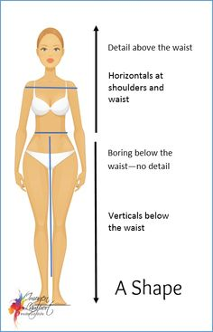
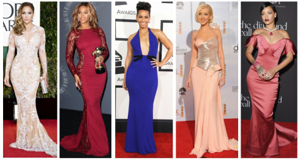

The Pear Shape
- Pear body traits: Your lower body is wider than your upper body — in other words, your hips are wider than your shoulders. Your bottom is rounded and your waist is well-defined.
- Your best assets: Shoulders and torso.
- Your fashion goals: Emphasize your waist and arms, add volume to your shoulders and upper body.

Dos and don'ts
- DO try A-line skirts
- DO keep hems of pants, skirts and dresses wide to balance the hips.
- DO experiment with light-colored tops and dark-colored bottoms for contrast.
- DO look for boat neck tops, square and cowl necklines.
- DO wear strapless dresses to show off arms and even out proportions.
- DO try styles with ruffles on top.
- DO wear jackets that hit right above the waist.
- DO opt for pointy-toed shoes to elongate your legs.

"As a rule of thumb, necklines for dresses should accentuate the shoulders and waist — play around with sweetheart, scoop-neck or plunging. Opt for visually interesting hemlines on dresses that slim the hips and thighs, like the hi-lo trend or a tulip skirt," advises J'Amy Tarr, the fashion designer and fashion illustrator behind the women's luxury outerwear brand J'Amy Tarr Outerwear.
2. Wedge body type